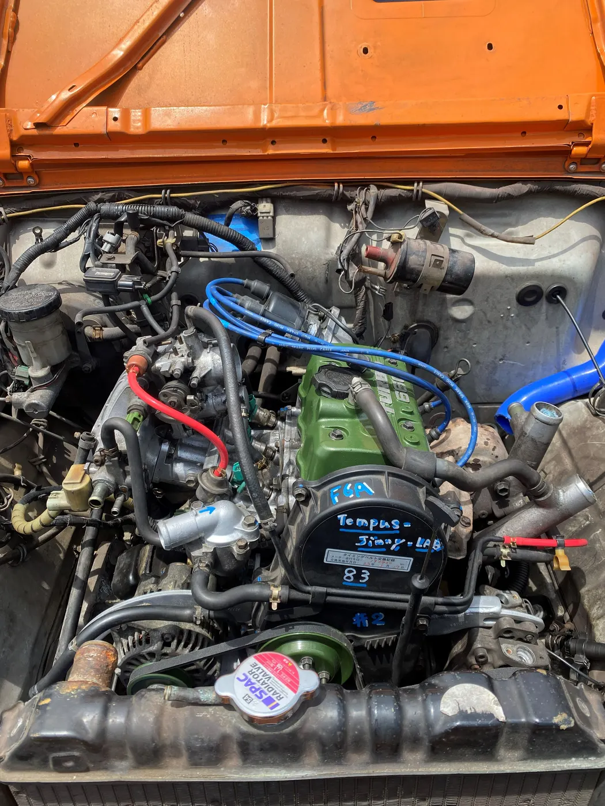

WORK 11
JA11 F6Aエンジン オーバーホール（水温異常・予防整備）
/ 作業事例
整備記録 // JA11 F6A

奈良市からお越しいただいたJA11 ジムニーです。 水温の異常があり、これから先も安心して乗り続けられるように、2023年5月にエンジンをオーバーホールしました。
エンジンを車から降ろして分解し、各部の状態を確認。ピストンリング、メタル、ガスケット、バルブ、タイミングベルト、テンショナー、ウォーターポンプなどを新品に交換して組み直しました。 JA11のF6Aは30年以上前のエンジンです。水温の異常は、放っておくとヘッドガスケットの抜けやオーバーヒートにつながることもあります。 ヘッドカバーは当店オリジナルでメタリックグリーンに塗り替えています。
- エンジンの取り外し
- エンジンの分解と各部の点検
- バルブ・ガスケットを新品に交換
- ピストンリング・メタルを新品に交換
- タイミングベルト・テンショナー・ウォーターポンプを新品に交換
- ヘッドカバーをメタリックグリーンに塗り替え
- 車両への搭載
Nova_83LAB にご依頼いただいた方へ。よろしければ Googleのクチコミ で感想をお聞かせください。